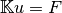
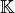
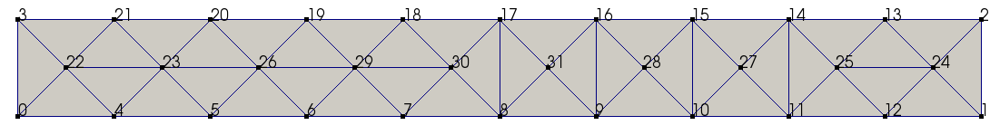
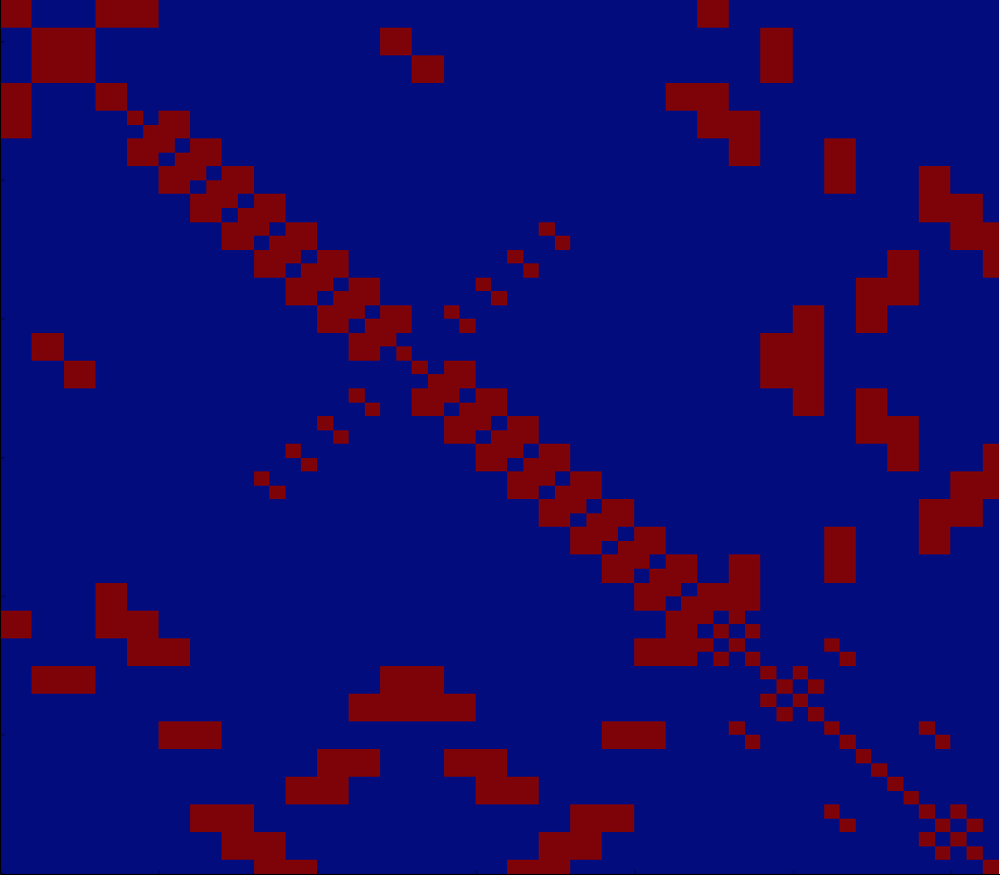
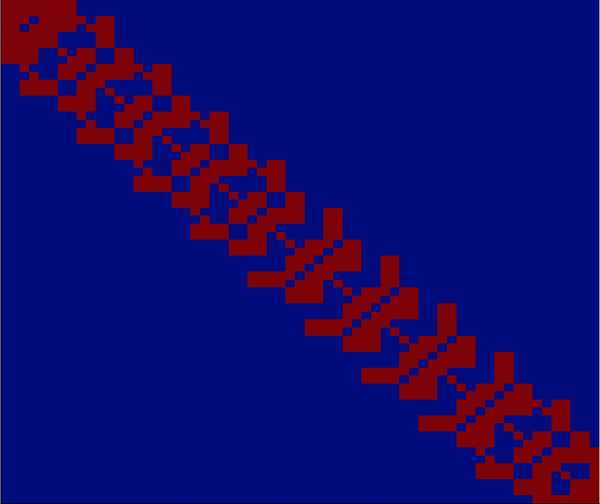
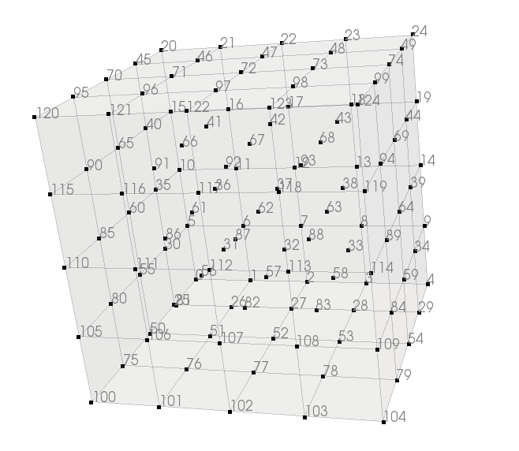
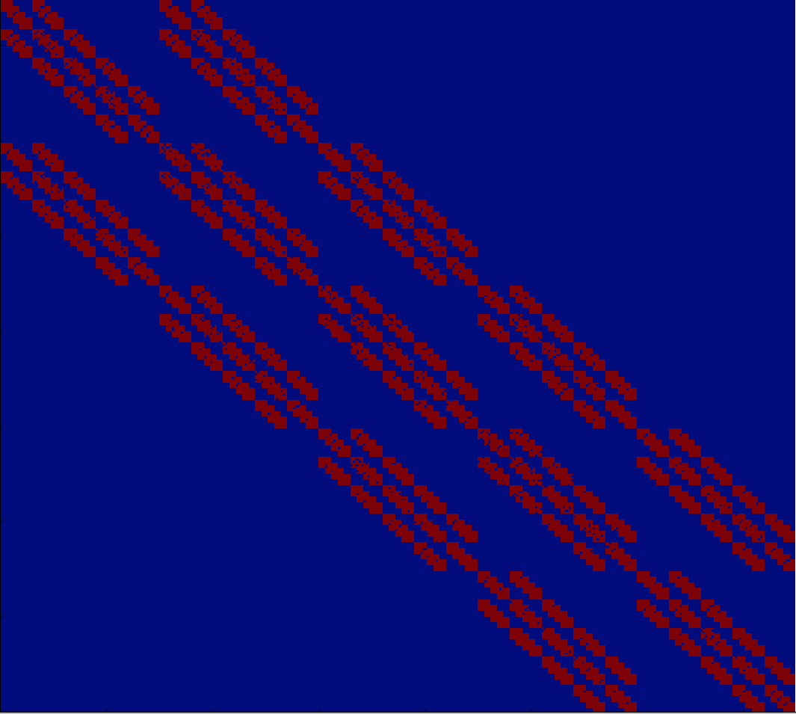

The formulation of the problem bounds to solve linear system of the form:

There are a lot of methods to solve this kind of problem and there are a lot of possible optimizations depending on the type of the matrix  (diagonal, symetric, triangular, etc).
In case of rigid bodies, the matrices representing the problems are expressed in the inertia frame rending them diagonals. In this case the resolution is immediate. In other cases the linear system is much more complicated to solve in an efficient way. There a lot of libraries implementing those resolution algorithms.
Moreover, there may be a lot of null terms in the matrix, in this case even the storing of the matrix should be changed, there is no point in storing a lot of 0 and make an algorithm (which will always be systematic) to multiply or add them.
In case of deformable bodies in 2D, the matrix shape depends on the node numbering. For example a simple beam with a basic numbering :
Then the matrix looks like this (null term in blue, size 64x64):
Just by changing the numbering of nodes the non-zero terms can be gathered close to the diagonal like this:
In this case only the band around the diagonal can be stored and a dedicated solver take advantage of this particular shape.
LAPACK is a powerfull sequential solver in this case and is use by default in LMGC90.
In case of a 3D case, like this block:
In this case, there are still a lot of null terms stored even with a smart renumbering (size 375x375):
And in case of a mesh with a lot of degrees of freedom the memory consumption can be so important that it will need more than the RAM available on the computer and the process will have to stop.
There are two ways to avoid this situation:
- use a Conjugate gradient method . There is an implementation of this algorithm in LMGC90 and this can be activated with the command: mecaMAILx_ExplodedStorage() (to put before LoadBehaviours() function).
- use a sparse storage and solver, see next section.
MUMPs is a powerfull linear algebra sparse solver. It can be compiled in a sequential or parallel way. Most package manager provide a parallel version and the parallel compiler associated.
If you compiled a sequential version of MUMPs, add the -DMUMPS_VERSION=sequential option when configuring LMGC90 compilation. If MUMPs was not installed in a standard path, you can specify the differents needed path. For example:
cmake . -DMUMPs_VERSION=sequential -DMUMPS_LIBRARY_PATH=/Users/mozul/MUMPs/lib -DMUMPS_INCLUDE_DIRECTORY=/Users/mozul/MUMPs/include -DMPISEQ_LIBRARY_DIRECTORY=/Users/mozul/MUMPs/libseq -DMPISEQ_INCLUDE_DIRECTORY=/Users/mozul/MUMPs/libseq
In case of parallel version of MUMPs, then LMGC90 must be compiled with MPI. Thus the same MPI compiler must be given to LMGC90 configure line. You may have to check which implementation of mpi is part of the dependency of your package (openmpi or mpich) install the corresponding compiler and then add it to the LMGC90 configuration line, like this in case of openmpi:
cmake . -DMUMPS_VERSION=parallel -DWITH_MPI=1 -DCMAKE_Fortran_COMPILER=openmpif90
Then in the command script, the sparse solver use is activated with the command: mecaMAILx_SparseStorage() (to put before LoadBehaviours() function).
Example
Run the beam example using either mecaMAILx_BandStorage(), mecaMAILx_ExplodedStorage() or mecaMAILx_SparseStorage() function and watch the consequences on RAM consumption and time measurments. In our test:
| Time | Max RAM | |
|---|---|---|
| Band | 17m06s | 6.3Go |
| Exploded | 1m59s | 960Mo |
| Sparse | 2m45s | 2.0Go |
{kind=link}
{kind=link}
{kind=link}
{kind=link}
{kind=link}